전체 row + is_promotion 포함: SHAP bar
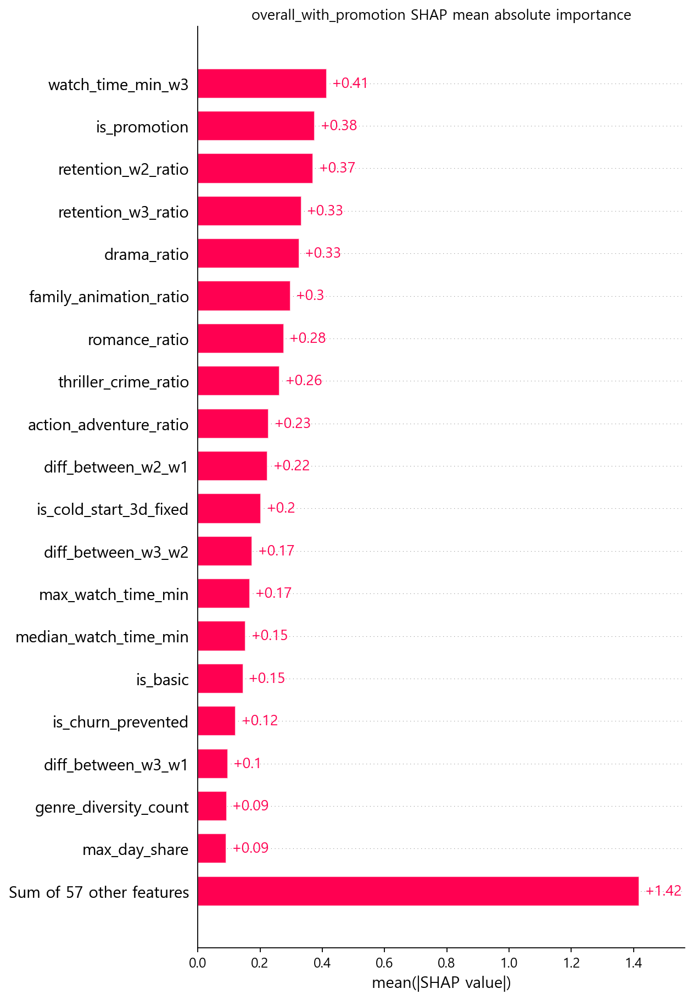
이 그림에서 1위는 watch_time_min_w3 (3주차 총 시청 시간, 분 단위)이고, 2위는 is_promotion (100원딜 프로모션 유입 여부)입니다. 다만 is_promotion이 높다는 것은 100원딜이 이탈을 일으켰다는 뜻이 아니라, 모델이 프로모션 유입 여부를 재구매 구분 신호로 활용했다는 뜻입니다.
이 문서는 100원딜 OTT 이탈 분석에서 생성된 16x SHAP 그림만 모아 해석하는 전용 HTML입니다. 그림은 모두 실제 산출물 PNG를 사용하며, 설명은 16x CSV와 figure inventory 기준으로 작성했습니다.
payment_is_mobile / payment_is_pc / payment_is_android / payment_is_ios 제거 후의 SHAP 해석 산출물입니다.
세그먼트 score source와 SHAP evidence 기준을 맞추기 위해 LightGBM 기준 해석을 중심으로 봅니다.
SHAP은 모델 설명입니다. 어떤 피처가 재구매를 만들었다거나 이탈을 유발했다는 뜻이 아닙니다.

이 그림에서 1위는 watch_time_min_w3 (3주차 총 시청 시간, 분 단위)이고, 2위는 is_promotion (100원딜 프로모션 유입 여부)입니다. 다만 is_promotion이 높다는 것은 100원딜이 이탈을 일으켰다는 뜻이 아니라, 모델이 프로모션 유입 여부를 재구매 구분 신호로 활용했다는 뜻입니다.
| 순위 | 피처 | 피처 묶음 | mean |SHAP| |
|---|---|---|---|
| 1 | watch_time_min_w3 (3주차 총 시청 시간, 분 단위) | 시청·유지 행동 묶음 (usage_retention_behavior) | 0.4139 |
| 2 | is_promotion (100원딜 프로모션 유입 여부, 1=프로모션, 0=일반) | 유입 구분 변수 묶음 (acquisition_split_key) | 0.3762 |
| 3 | retention_w2_ratio (1주차 대비 2주차 시청 유지 비율) | 시청·유지 행동 묶음 (usage_retention_behavior) | 0.3708 |
| 4 | retention_w3_ratio (1주차 대비 3주차 시청 유지 비율) | 시청·유지 행동 묶음 (usage_retention_behavior) | 0.3325 |
| 5 | drama_ratio (전체 시청 콘텐츠 중 드라마 장르 비율) | 콘텐츠 취향 맥락 묶음 (content_preference_context) | 0.3257 |
| 6 | family_animation_ratio (전체 시청 콘텐츠 중 가족/애니메이션 장르 비율) | 콘텐츠 취향 맥락 묶음 (content_preference_context) | 0.2974 |
| 7 | romance_ratio (전체 시청 콘텐츠 중 로맨스 장르 비율) | 콘텐츠 취향 맥락 묶음 (content_preference_context) | 0.2761 |
| 8 | thriller_crime_ratio (전체 시청 콘텐츠 중 스릴러/범죄 장르 비율) | 콘텐츠 취향 맥락 묶음 (content_preference_context) | 0.2630 |
| 9 | action_adventure_ratio (전체 시청 콘텐츠 중 액션/어드벤처 장르 비율) | 콘텐츠 취향 맥락 묶음 (content_preference_context) | 0.2279 |
| 10 | diff_between_w2_w1 (2주차 시청시간 - 1주차 시청시간, 증감 신호) | 시청·유지 행동 묶음 (usage_retention_behavior) | 0.2241 |
| 11 | is_cold_start_3d_fixed (구독 후 3일 이내 첫 시청 여부, row-level 재계산 fixed 버전) | 시청·유지 행동 묶음 (usage_retention_behavior) | 0.2027 |
| 12 | diff_between_w3_w2 (3주차 시청시간 - 2주차 시청시간, 증감 신호) | 시청·유지 행동 묶음 (usage_retention_behavior) | 0.1747 |
근거: 16x_SHAP_global_importance.csv
bar 그림은 “어떤 피처가 모델 안에서 많이 쓰였는가”를 보여주는 전역 중요도 그림입니다. 여기서 중요한 점은 1위가 watch_time_min_w3 (3주차 총 시청 시간, 분 단위)이고, 상위권에 retention_w2_ratio (1주차 대비 2주차 시청 유지 비율), retention_w3_ratio (1주차 대비 3주차 시청 유지 비율), diff_between_w2_w1 (2주차 시청시간 - 1주차 시청시간, 증감 신호) 같은 시청·유지 행동 신호가 함께 있다는 점입니다.
따라서 발표에서는 “모델이 3주차 시청량과 유지율 변화를 재구매 점수 구분에 크게 활용했다”고 말하는 것이 안전합니다. 반대로 “3주차 시청시간이 재구매를 만든다”라고 말하면 인과 주장으로 넘어가므로 피해야 합니다.
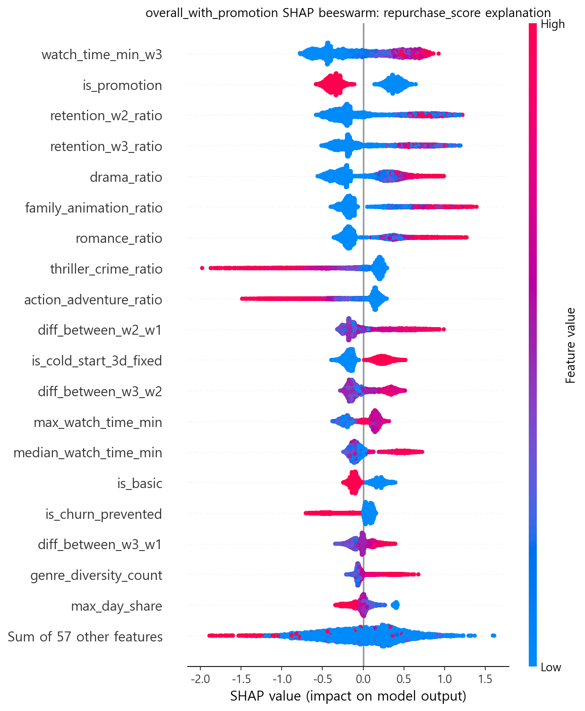
beeswarm은 bar보다 정보가 많습니다. 같은 피처라도 모든 row에서 같은 방향으로 작동하지 않을 수 있고, 분포가 넓으면 row별 영향이 크게 달랐다는 뜻입니다. 단, 이 방향성도 모델 내부 설명일 뿐 실제 고객 행동의 원인 설명이 아닙니다.
먼저 y축에서 어떤 피처가 위에 있는지 봅니다. 위에 있을수록 전역 중요도가 큽니다.
그다음 x축을 봅니다. 오른쪽은 재구매 점수를 올리는 방향, 왼쪽은 재구매 점수를 낮추는 방향입니다.
마지막으로 색과 퍼짐을 봅니다. 피처값이 높은 row와 낮은 row가 모델 점수에 어떤 방향으로 연결됐는지 대략적으로 확인할 수 있습니다.
주의: “오른쪽에 있으니 원인이다”가 아닙니다. “모델이 그렇게 점수화했다”가 안전한 표현입니다.
bar는 평균 중요도만 보여주기 때문에 피처가 어떤 방향으로 작동했는지, row마다 영향이 얼마나 달랐는지는 잘 보이지 않습니다. beeswarm은 각 row가 점 하나로 찍히기 때문에 같은 피처라도 어떤 row에서는 재구매 점수를 올리고, 어떤 row에서는 낮추는 식의 분포를 볼 수 있습니다.
그래서 이 그림은 “모델이 모든 고객을 같은 방식으로 본 것이 아니라, 같은 피처라도 row별 맥락에 따라 다른 점수 영향을 줬다”는 설명에 유용합니다. 다만 여기서도 고객 행동의 원인을 증명하는 것은 아니므로, 메시지 전략으로 옮길 때는 반드시 후보 표현을 써야 합니다.
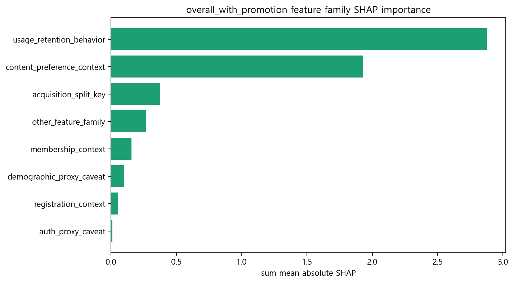
개별 피처만 보면 장르나 프로모션 변수가 눈에 띄지만, 묶음 단위로 보면 usage_retention_behavior (시청·유지 행동 묶음)가 가장 큽니다. 따라서 발표에서는 “핵심은 day0~20 시청·유지 행동 신호”라고 말하는 것이 가장 안전합니다.
| 순위 | 피처 묶음 | mean |SHAP| 합계 |
|---|---|---|
| 1 | 시청·유지 행동 묶음 (usage_retention_behavior) | 2.8773 |
| 2 | 콘텐츠 취향 맥락 묶음 (content_preference_context) | 1.9300 |
| 3 | 유입 구분 변수 묶음 (acquisition_split_key) | 0.3762 |
| 4 | 기타 피처 묶음 (other_feature_family) | 0.2657 |
| 5 | 멤버십 맥락 묶음 (membership_context) | 0.1568 |
| 6 | 인구통계 대리 변수 주의 묶음 (demographic_proxy_caveat) | 0.1014 |
| 7 | 가입 시점 맥락 묶음 (registration_context) | 0.0533 |
| 8 | 인증 상태 대리 변수 주의 묶음 (auth_proxy_caveat) | 0.0112 |
근거: 16x_SHAP_family_importance.csv
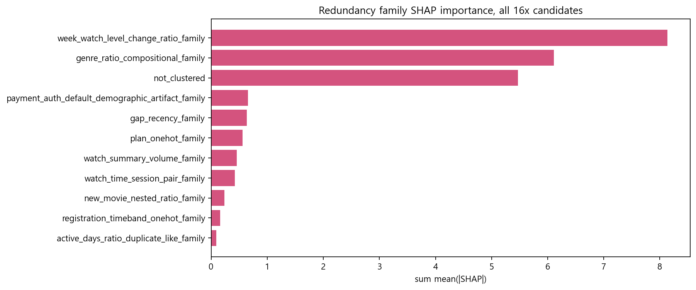
피처가 많을수록 개별 피처 중요도가 쪼개져 보일 수 있습니다. 그래서 발표에서는 개별 피처 순위만 말하지 않고, family 수준의 큰 축도 함께 설명해야 합니다.
아래 표는 피처값과 SHAP 값의 상관을 요약한 것입니다. 양수면 피처값이 커질수록 모델이 재구매 점수를 올리는 방향으로 쓰는 경향이 있고, 음수면 낮추는 방향으로 쓰는 경향이 있다는 뜻입니다.
하지만 이 표도 인과가 아닙니다. 특히 is_user_verified, age_group, 성별 변수는 인증·인구통계 대리 변수 caveat가 있으므로 고객 특성처럼 직접 해석하면 안 됩니다.
| 피처 | 피처 묶음 | 피처값-SHAP 상관 | 읽는 법 |
|---|---|---|---|
| is_promotion (100원딜 프로모션 유입 여부, 1=프로모션, 0=일반) | 유입 구분 변수 묶음 (acquisition_split_key) | -0.980 | 피처값이 클수록 재구매 점수를 낮추는 방향 |
| is_churn_prevented (이전 이탈 방지 이력 여부) | 기타 피처 묶음 (other_feature_family) | -0.894 | 피처값이 클수록 재구매 점수를 낮추는 방향 |
| is_user_verified (본인인증 완료 여부, 인증 상태 대리 변수) | 인증 상태 대리 변수 주의 묶음 (auth_proxy_caveat) | -0.920 | 피처값이 클수록 재구매 점수를 낮추는 방향 |
| is_standard (스탠다드 요금제 여부) | 멤버십 맥락 묶음 (membership_context) | 0.850 | 피처값이 클수록 재구매 점수를 올리는 방향 |
| is_premium (프리미엄 요금제 여부) | 멤버십 맥락 묶음 (membership_context) | 0.627 | 피처값이 클수록 재구매 점수를 올리는 방향 |
| age_group (나이대 그룹, 인구통계 대리 변수) | 인구통계 대리 변수 주의 묶음 (demographic_proxy_caveat) | 0.604 | 피처값이 클수록 재구매 점수를 올리는 방향 |
| is_female (여성 여부, 인구통계 대리 변수) | 인구통계 대리 변수 주의 묶음 (demographic_proxy_caveat) | 0.916 | 피처값이 클수록 재구매 점수를 올리는 방향 |
| is_male (남성 여부, 인구통계 대리 변수) | 인구통계 대리 변수 주의 묶음 (demographic_proxy_caveat) | -0.856 | 피처값이 클수록 재구매 점수를 낮추는 방향 |
| reg_is_weekend (주말 가입 여부) | 가입 시점 맥락 묶음 (registration_context) | 0.837 | 피처값이 클수록 재구매 점수를 올리는 방향 |
| reg_hour_morning (오전 가입 여부) | 가입 시점 맥락 묶음 (registration_context) | 0.861 | 피처값이 클수록 재구매 점수를 올리는 방향 |
| reg_hour_afternoon (오후 가입 여부) | 가입 시점 맥락 묶음 (registration_context) | -0.897 | 피처값이 클수록 재구매 점수를 낮추는 방향 |
| reg_hour_evening (저녁 가입 여부) | 가입 시점 맥락 묶음 (registration_context) | -0.919 | 피처값이 클수록 재구매 점수를 낮추는 방향 |
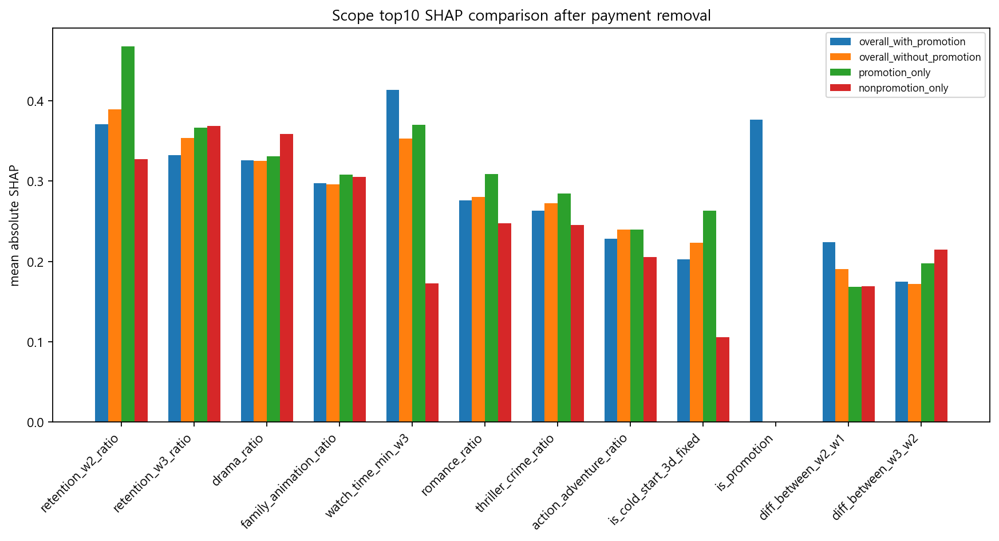
scope별 비교는 특정 피처가 모든 집단에서 안정적으로 중요한지, 특정 scope에서만 두드러지는지 확인하기 위한 장치입니다. 하나의 scope만 보고 전체 프로젝트 결론으로 확장하면 과잉 해석이 됩니다.
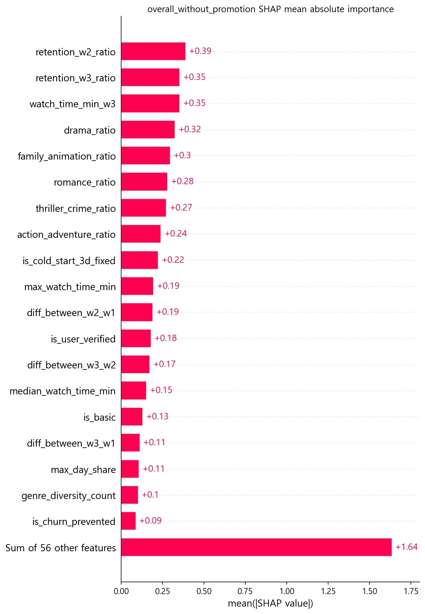
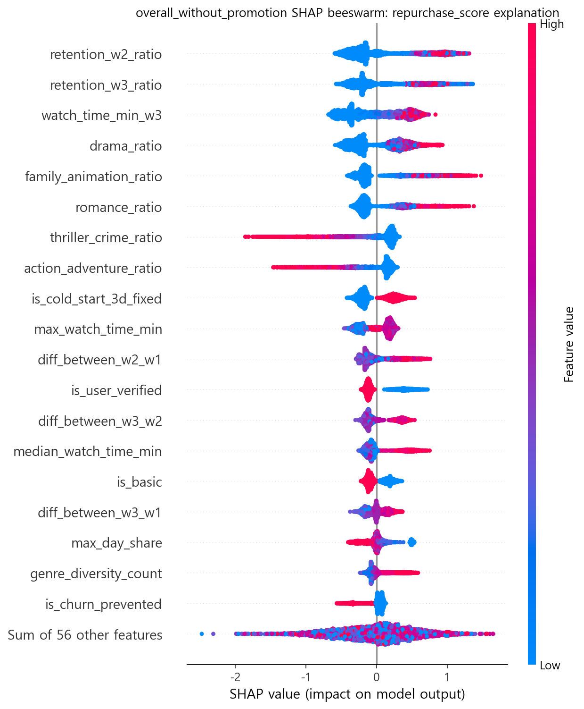
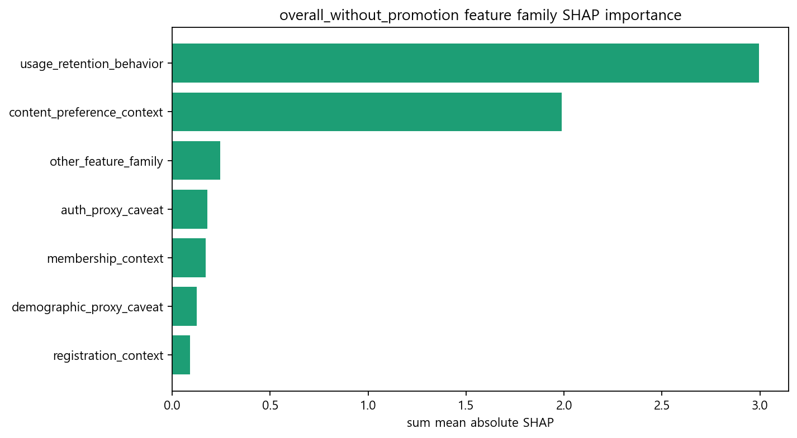
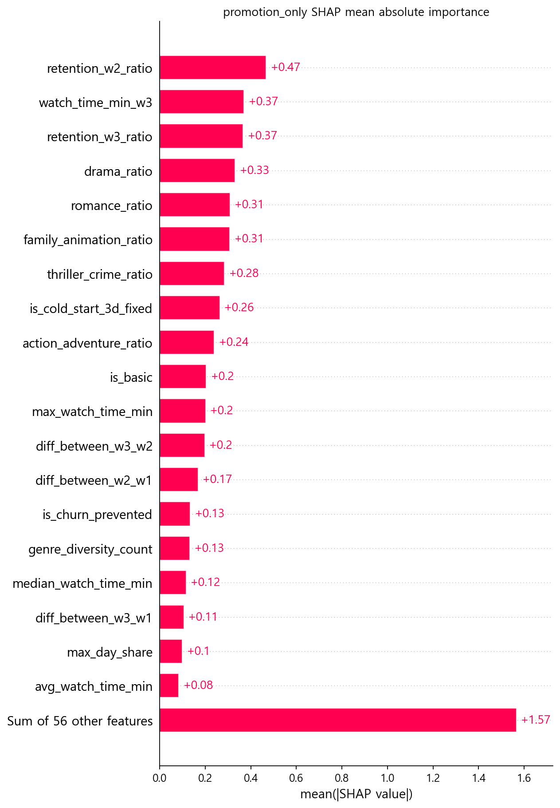
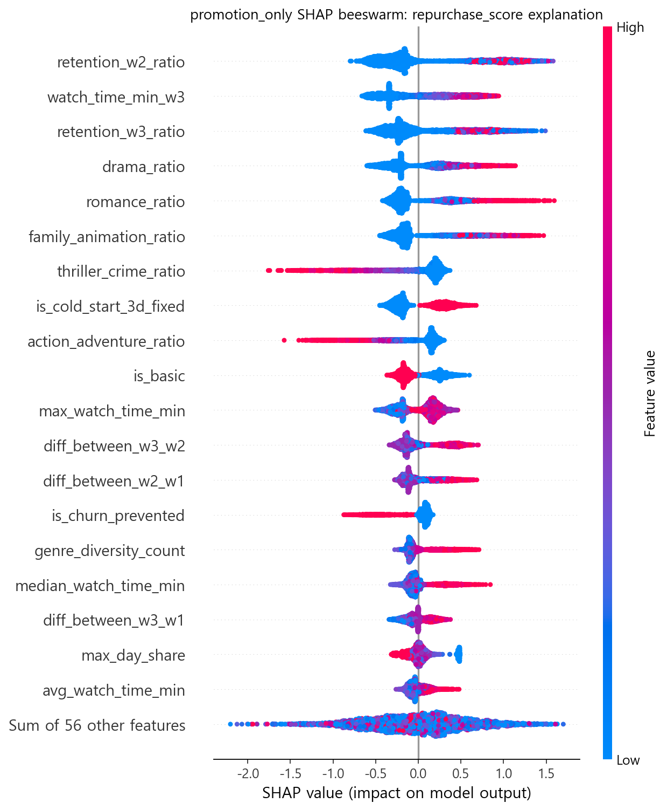
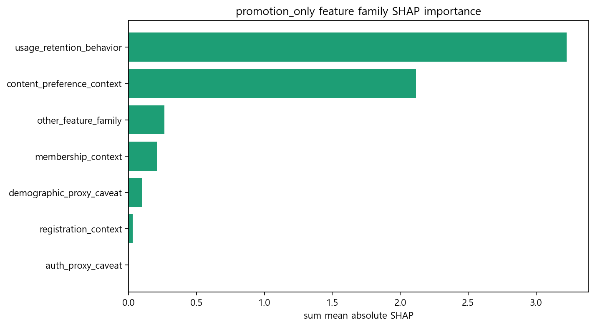
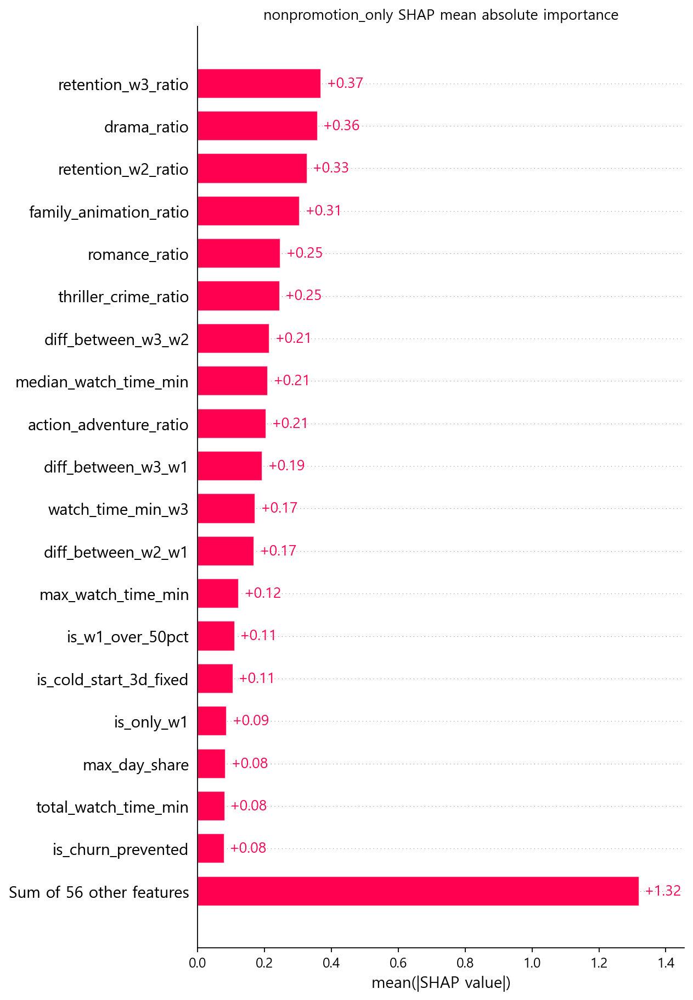
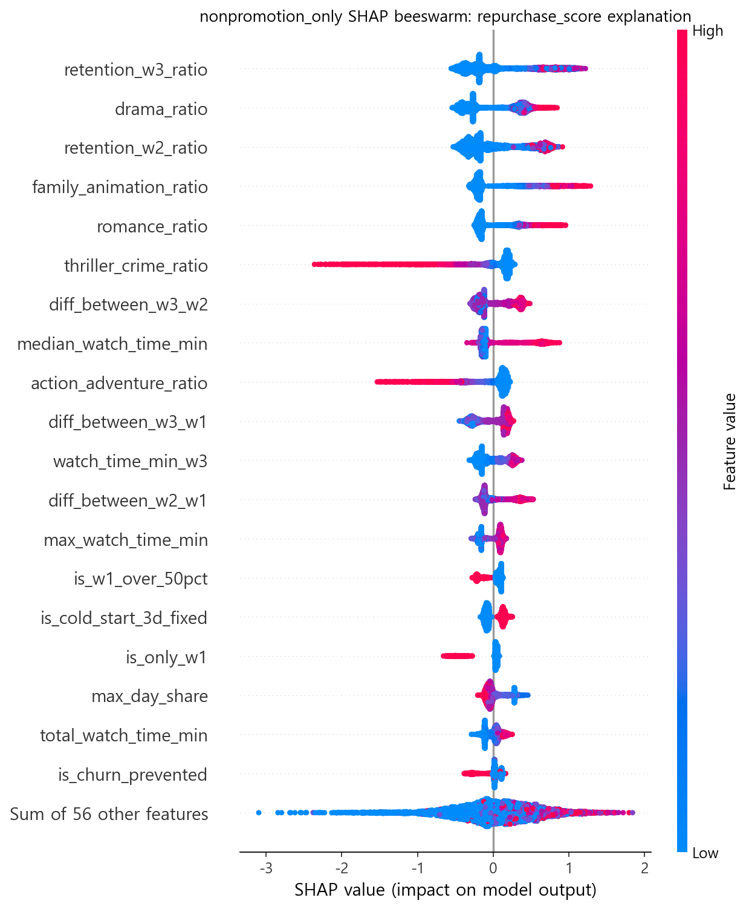
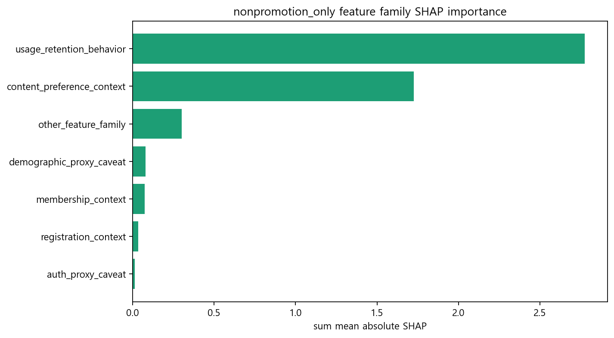
“모델이 재구매 여부를 구분할 때 watch_time_min_w3 (3주차 총 시청 시간, 분 단위)를 가장 크게 활용했다.”
“피처 묶음 기준으로는 시청·유지 행동 신호가 가장 큰 축이다.”
“콘텐츠 장르는 Movie_Master category mapping 기반 대리 신호다.”
“3주차 시청 시간이 재구매를 만든다.”
“100원딜이 이탈을 유발했다.”
“is_promotion이 2위니까 100원딜 자체가 문제다.”
SHAP은 원인 설명이 아니라 모델 설명입니다. 이 프로젝트에서 안전한 결론은 “day0~20 시청·유지 행동과 콘텐츠 대리 신호가 재구매 점수 구분에 크게 사용됐다”입니다.
| 구분 | 파일 |
|---|---|
| 그림 inventory | reports/interpretation/16x_SHAP_candidate_interpretation_260516/16x_visualization_inventory.csv |
| 개별 피처 중요도 | reports/interpretation/16x_SHAP_candidate_interpretation_260516/16x_SHAP_global_importance.csv |
| 피처 묶음 중요도 | reports/interpretation/16x_SHAP_candidate_interpretation_260516/16x_SHAP_family_importance.csv |
| 방향성 요약 | reports/interpretation/16x_SHAP_candidate_interpretation_260516/16x_SHAP_direction_summary.csv |
| 그림 폴더 | reports/figures/16x_SHAP_candidate_interpretation_260516 |